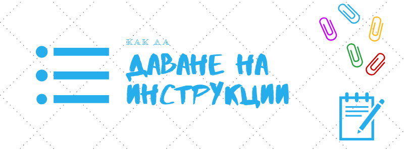

6 бързи и лесни съвета за даване на инструкции
Немалко мениджъри и ментори обясняват важни и повтарящи се процеси само веднъж и очакват служителите им да ги повтарят както трябва отведнъж. После се изненадват когато откриват, че нещо е вършено неправилно в продължение на години и се изисква преглед на цялата предишна документация за грешки и неточности. За да сте подкрепа на сътрудниците си, трябва да се научите да предавате информация и процедури ясно, ефективно и навременно.
От другата страна, спомняте ли си как някой ви е помолил да свършите някаква задача, която нямате никаква представа как става… и след това ситуацията се явява в кошмарите ви. Гадно е, нали?
Да, трудно е, когато си забързан, да отделиш няколко минути за обяснение. Но ако си спомняте чувството не бихте ли желали да спестите мъките на своите колеги? Мисля, че това е нещо, което не бихме пожелали на най- лошите си врагове.
Да се научим как се дават инструкции и задачи може да не изглежда приоритетно, защото по презумция носи полза на по- неопитни и не толкова влиятелни колеги. Обаче за тях, вашата подкрепа може да натежи при вземане на решение дали ще останат на работа, което по- нататък би облекчило товара ви. Освен това, никога не се знае чия признателност ще ви е в помощ в труден момент; всеки напредва с различен темп в кариерата. Особено ако сте мениджър, няма нищо по- съществено от сплотеността и ефективността на екипа ви, което зависи от даването на ясни и добри задачи, както и как да ги изпълнят с най- малко суматоха и нерви.
Извън ежедневния ход на работа в компанията, даването на инструкции, наставления или указания е нужно основно при два случая: първият, ако сте натоварени да въведете в работата нов служител, които си няма понятие как работят системите и дори самата фирма; а вторият, ако отсъствате за по- дълго време и трябва да подготвите заместника си да изпълнява някои от вашите функции за дадения срок.
Друг случай, когато трябва да давате инструкции е когато работите с фрийлансър, специалист или фирма- подизпълнител. За несвикнали със ситуацията, отначало това може да доведе да множество недоразумения, изпуснати срокове и враждебност. Главното тогава е да имате предвид, че най- вероятно хората, на които възлагате работа, имат и други ангажименти, крайни срокове и неприятности освен вашите. Особено ако ги молите за допълнително преправяне, допълване или свързана услуга, първо не прекалявайте, защото така намалявате заплащането им и възможността да служат на други техни клиенти, така че предложете бонус срещу екстрите; и второ, имайте супер специфичен и ясен договор и спецификация, което представялва описание и изисквания за резултатите или поръчката, които очаквате. Предположенията са най- коварния ви враг.
В зависимост от обстоятелствата и публиката подходът ви ще е различен.
Трябва да опишете в по- големи детайли стъпките и справочните материали за нов служител, защото те не познават корпоративната култура, инструменти и знаещи хора.
Не е достатъчно да кажете “виж в онзи имейл или в еди-кой-си документ”. Те може и да не са получили мейла, а дори да са отворили документа, най- вероятно са се сблъскали с още поне двадесетина източника и инструмента и може да не се сещат точно за кой говорите. Не приемайте, че ще запомнят още от първия път сред потока от нови информация, лица и изисквания. В началото се отнасяйте като че с непознат посетител, постепенно намалявайте подробностите. Например не казвайте “Отиди при Кристина да ти даде списъка”, а “Отиди на първия етаж при Кристина, главният ни счетоводител, с който се запозна вчера, за да ти даде списъка, който после ще потрябва за…” и т.н. Ще ви звучи неестествено, но новака ви ще е благодарен. А отнема само няколко секунди.
Освен описание на действието, в началото давайте и обяснение. “Направи това, поради тази причина.” Ще се учудите колко служители изпълняват някакви задачи дословно или точно както са им ги показали веднъж, без разбиране, което води до натрупване на нонсенс или неточности, което в даден момент дразни колегите или началника им, стига да не доведе до голям проблем ако нямате късмет.
Освен това, добре е за всяка дейност, която трябва да извършват сътрудниците или подчинените ви, да създадете така наречената стандартна процедура (Standard Operating Procedure, или съкратено SOP) особено ако организацията ви се разраства и идват доста нови лица. Това представлява подробно описание на извършваното действие, така че всеки, дори да не разбира от областта, да може да го повтори без да се очакват грешки. Може да ви звучи страшно, но ако някой се разболее или напусне, трябва да може да бъде заместен.
Ориентирайте ги какво се очаква
По възможност опишете колко време отнема всяка задача. Това дава представа на незапознатите как се справят в сравнение със средното. Позволява им също да организират времето си.
Дайте представа на служителите си с какъв приоритет са дадените задачи, за да знаят, с коя да се захванат най- напред. Не казвайте “възможно най- скоро”, защото ако за вас това е след няколко часа, а за тях няколко дни или обратното, всички ще са недоволни и стресирани.
Проверете дали са разбрали, като им зададете няколко въпроса или ситуации. Също позволете на служителите или сътрудниците на свой ред да питат изясняващи въпроси, които пак ще ви подскажат дали всичко е разбрано.
Дайте контекст
Най- трудното когато сме изправени пред нова задача и в нова среда, особено ако сме неопитни, е да оценим контекста.
Затова не обяснявайте само какво се изисква, а и защо задачата е важна за бизнеса. Това показва уважение към новия сътрудник и приобщава, защото показва как се трудите за обща цел.
Докато се запознаем с всички аспекти и особености на организацията и с естеството на работата, няма как да преценим колко време ще отнеме горе- долу дадено задание. Ръководителят, може би вие, има някаква представа към която се добавя няколко процента за ровене, питане и разучаване на системите и процедурите.
Кажете точно и конкретно какво очаквате: брой на страници или слайдове, брой обработени задачи, с кои хора да се свържат по имена, каква информация ви трябва и под каква форма, как да го опишат и т.н. Или ако искате от някой да изготви някакъв стандартен доклад, посочете им примери или подобни предишни документи.
Информирайте ги също какво става след като изпълнят задачата. Трябва ли да ви потърсят, да ви напишат имейл или да отбележат някъде, че е готово? Какво да подхванат след това?
Посочете документите
Споменах вече, че е добре да посочите къде се намират важни документи и как новия ви колега сам да ги потърси. Но също може да създадете дори измпровизиран документ или страничка, където да съберете на едно място важна информация. Списъци, чеклисти, процедури не са най- вълнуващите аспекти от работата, но имат ефект.
По възможност първо обяснете, а после им покажете документа, за да не се разсейват като му хвърлят едно око.
Пишете ясно
Особено когато пишете инструкции за външни потребители или за конкурс, помислете как текстът може да бъде разбрано неправилно. Така ще избегнете разменянето на редица имейли или въпроси.
За да избегнете изкушението да разтягате локуми, оформете инструкциите чрез подточки или тирета, сещате се- така наречените “булети”.
Ако написаното е важно и ще се използва от редица служители, преди да започнете да навързвате думите отделете време за размисъл, правене на мисловна карта или нахвърлете основните точки.
Избягвайте доколкото е възможно жаргон, съкращения и сложни думи, които може да не са познати на външни за организацията ви лица. Слагайте линкове дори да си мислите, че “това всеки го знае”.
Изяснете целта и им дайте свобода
Да бъдете изрични и детайлни може да бъде свръхполезно за някой с по- малко опит в областта.
Но ако имате работа с опитен специалист, понякога е достатъчно да им обрисувате само целта и да им посочите някои специфични за компанията особености. Да нямаш доверие на колегите си често води до грешки и пилеене на повече време и ресурси отколкото е необходимо.
Нагласата ви следва максимално да се доближава до “Ако се колебаеш- стратегията ни е такава (нужно е определеност, действеност и повторение, за да стане мисията истинска, а не просто за показ), а най- важното е [клиентът да е доволен/ бързината/ качеството] и имаме доверие в преценката ти (щом си нает).”.
Все пак проверявайте как върви процеса няколко пъти преди да ви притиснат крайните срокове, за да може и двете страни да сверят правилно ли са схванали. Напомнянията и санкциите не са приятни за никого.
Вкарайте ги в правилния път
Най-важно ако не всичко върви гладко, сътрудниците ви да имат изход или очевидна следваща стъпка.
Вашата отговорност е да очертаете, че ако има проблем, да се обърнат към еди-кой-си или да изпълнят тези стъпки:...
За да си спестите усилия, посочете алтернативи или условия. Например да възстановяват парите при връщане, ако артикула е под 10 лева. Или ако възлагате на някой да поръча материали, но обичайния ви доставчик няма наличност, добре е да знаят дали да чакат или да намерят друг доставчик стига да не е много по- скъпо и няма да се чака повече от 3 дни да речем. Или ако молите някой да ви уговори среща, дайте втора възможна дата, ако отсрещната страна не е свободна на посочената дата, или им предоставете календара ви. Така избягвате необходимостта да ви безпокоят отново. А и какъв е смисъла да го възлгате на друг, ако ще трябва да ви пита отново и отново.
И накрая, независимо дали възложеното влиза в типичните задължения на човека или не, покажете че го оценявате. Никога не знаете колко може да означава за някого! Благодарете им за търпението да ви изслушат, за помощта и за това, че полагат усилия да се изправят пред сложността и забързаността на бизнес ежедневието. Вдъхновяващо е и те на свой ред може да са по- търпеливи и внимателни. Доброто дело понякога е кът.
За въвеждане на нови служители във фирмата ви, вижте по- подробното и безплатно обучение по Обучение на работното място.